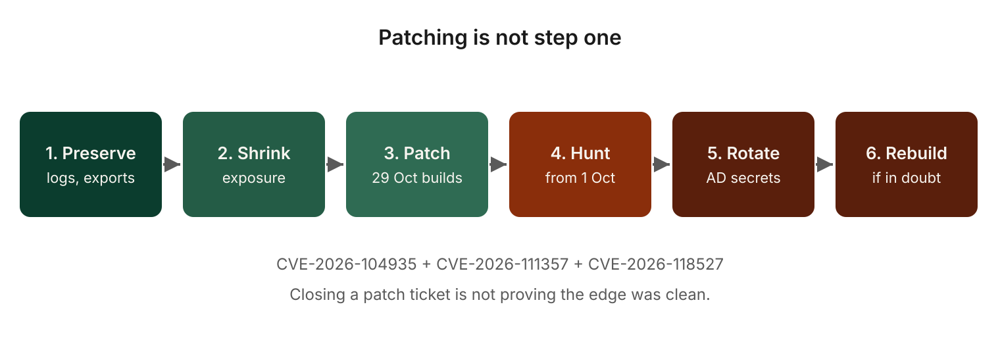

Ivanti Connect Secure Is on CISA KEV Again: Hunt, Then Patch
CISA’s 30 October 2026 alert added two Ivanti Connect Secure vulnerabilities to the KEV catalog:
- CVE-2026-111357: missing authentication for a critical function, privilege escalation for a local authenticated attacker. Federal due date 2 November 2026, with forensic triage required. That date has already passed.
- CVE-2026-118527: generation of predictable numbers or identifiers, letting a remote authenticated attacker upload files with attacker controlled content to a known location on disk. Federal due date 13 November 2026.

KEV notes say both can be chained with CVE-2026-104935, and that third ID is the part that makes this an edge problem. It went on KEV on 13 October with a 16 October due date, and KEV describes it as arbitrary command execution by a remote, unauthenticated attacker. The two new entries need an authenticated attacker on their own. Chained behind 104935, they do not.
Volexity found the chain in the wild in early October on appliances that were fully patched at the time (22.8R2.4) and tracks the actor as UTA0576. Ivanti fixed the login bypass on 13 October. The root escalation (111357) did not get a patch until 29 October. For about two weeks, a box patched for the front door could still be taken to root. This is not a single isolated bug. It is a path.
If your org still runs Connect Secure on the internet edge, you already know the pattern. VPN and remote access appliances remain favorite targets because they sit outside most of the detection stack that covers laptops and servers.
The angle most ticket queues miss
A patch job answers “is the hole closed?” It does not answer “did someone already walk through it?”
CISA’s BOD 26-04 implementation guidance makes that distinction explicit for federal agencies: for high urgency KEV cases, forensic triage belongs in the same response window as remediation. Private sector teams should copy that habit even when the directive does not bind them.
This campaign shows why. Volexity reports the attacker deleted evidence of exploitation from the appliance debug logs and Linux audit logs, then went after Active Directory secrets, including LAPS passwords and BitLocker recovery keys (summary). The January 2024 Connect Secure chain (CVE-2023-46805 with CVE-2024-21887) taught the same lesson: a clean firmware bump says nothing about what already happened.
What the KEV descriptions imply for defenders
From CISA’s short descriptions:
- CVE-2026-118527 is about predictable identifiers and attacker controlled file content landing in a known disk location. That is a persistence and staging friendly primitive once you have authenticated access.
- CVE-2026-111357 is privilege escalation when authentication to a critical function is missing for a local authenticated attacker.
Together with the documented chain note, defenders should assume an authenticated foothold can become a higher privilege foothold with planted content. Do not design detections only around unauthenticated scanners. Watch authenticated abuse and post auth file writes too.
Detection and hunting without a PoC
Focus on evidence classes that do not require weaponized steps.
Exposure and inventory
- Confirm every Connect Secure instance, including forgotten lab and DR units.
- Record build or version strings from the appliance itself, not from last year’s spreadsheet.
- Note which units are internet exposed versus internal only.
Auth and session anomalies
- Failed and successful admin logins from unusual geos or ASNs.
- New local accounts, unexpected privilege changes, and authentication events outside change windows.
- Spikes in authenticated API or admin UI activity that do not match help desk volume.
Filesystem and integrity
- Unexpected files in web accessible or known writable paths after the KEV date.
- Run Ivanti’s Integrity Checker Tool, internal and external. Do not treat a clean result as closure: CISA has warned the tool may not detect exploitation of CVE-2026-104935, and activity that lived only in memory can escape it.
- Gaps or truncation in the appliance debug and audit logs during October. This actor cleaned them, so missing data is itself a lead.
- Modified scheduled tasks, startup scripts, or atypical outbound callbacks from the appliance management plane.
Downstream blast radius
- VPN session creation for dormant accounts.
- Lateral movement from the VPN subnet into Tier 0 or jump hosts shortly after suspicious appliance events.
- Credential use from VPN egress IPs that never appeared before.
If your only alert is “CVE scanner found Ivanti,” you are late to your own incident.
Mitigation order that respects reality
- Preserve evidence where feasible: logs, config exports, disk images for critically exposed nodes.
- Reduce exposure while you patch: restrict admin interfaces, tighten allow lists, disable unused services.
- Upgrade to Ivanti’s 29 October builds: 22.8R2.6 or 25.1.1.3 per public reporting. If you run another 25.1.x line, confirm the matching fixed build in Ivanti’s advisory. Boxes you patched on 13 October still need this.
- Hunt for compromise from 1 October 2026 onward, not just around the 30 October KEV date. Exploitation of this chain started in early October.
- Rotate trust: VPN user secrets where warranted, admin credentials, API keys, certificates if integrity is doubtful.
- Rebuild when integrity cannot be established. Patching a rooted edge device is optimism, not engineering.
For federal readers, map this against BOD 26-04 timelines and triage steps. For everyone else, use the same sequence because attackers do not care whether you are FCEB.
What to tell the CISO in one paragraph
Two Ivanti Connect Secure flaws are on KEV as of 30 October 2026, with due dates of 2 November and 13 November 2026. Chained with CVE-2026-104935 from 13 October, they give an unauthenticated attacker root, and the actor behind it cleaned logs and took AD secrets. Our response is inventory, exposure reduction, vendor fixes, and compromise assessment before we mark the risk closed.
Defender checklist
- Complete Connect Secure inventory including nonprod
- Confirm internet exposure status per instance
- Upgrade every appliance to the 29 October builds, including ones patched on 13 October
- Run the Integrity Checker Tool, and do not stop there if it comes back clean
- Review admin auth, file integrity and log gaps from 1 October onward
- Rotate AD service accounts, LAPS passwords and BitLocker recovery keys reachable from the appliance if compromise cannot be ruled out
- Rebuild when integrity is uncertain
- Add edge appliance integrity monitoring to the standing control set
Edge access products fail in public. Your response process should assume that, then prove the optimistic case with logs.
Sources
- CISA: CISA adds two known exploited vulnerabilities to catalog (30 Oct 2026)
- CISA KEV entry: CVE-2026-104935
- Volexity: a series of unauthenticated events, chained exploitation of Ivanti Connect Secure zero days
- The Hacker News: attackers chain three Ivanti Connect Secure flaws
- SC World: CISA adds chained Ivanti Connect Secure bug to its exploited list
- Tech Insider: Ivanti Connect Secure zero days, fixes and federal deadlines
- Braindetox: Ivanti CVE-2026-111357 and 118527, KEV dates and checks
- CISA: BOD 26-04 implementation guidance